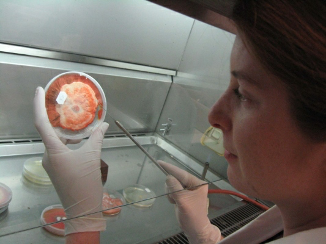

Los fundamentos conceptuales de Fibre Reactive radican en la idea de la moda como un medio orgánico y
vivo, en lugar de una mercancía manufacturada y desechable. El vestido desafía las prácticas tradicionales
de la moda al hacer del acto de vestir un proceso activo y en evolución, con la naturaleza desempeñando un
papel clave en la conformación del aspecto final.
Este proyecto también aborda la sostenibilidad, ya que
el hongo en sí es un material renovable y biodegradable, lo que contrasta con el desperdicio a menudo
asociado con la moda rápida .
Fibre Reactive se centra en la relación entre la moda y la naturaleza, utilizando el crecimiento de hongos como una característica dinámica del diseño. En este proyecto, Franklin incorporó el hongo Pycnoporus coccineus en la tela de un vestido. El hongo vivo crece y cambia con el tiempo en respuesta a las condiciones ambientales, como la humedad y la temperatura. El vestido no es solo una pieza de moda estática, sino una obra de arte viva y en evolución que refleja el entorno del usuario. A medida que el hongo crece, añade nuevas texturas y colores a la prenda, alterando su apariencia con el tiempo.
